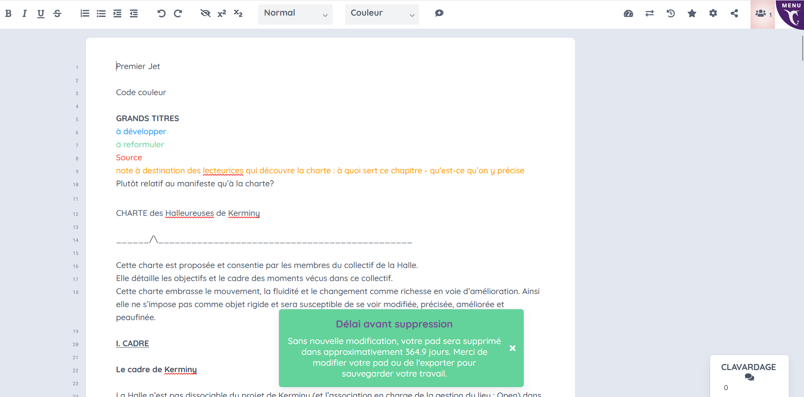
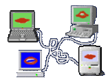
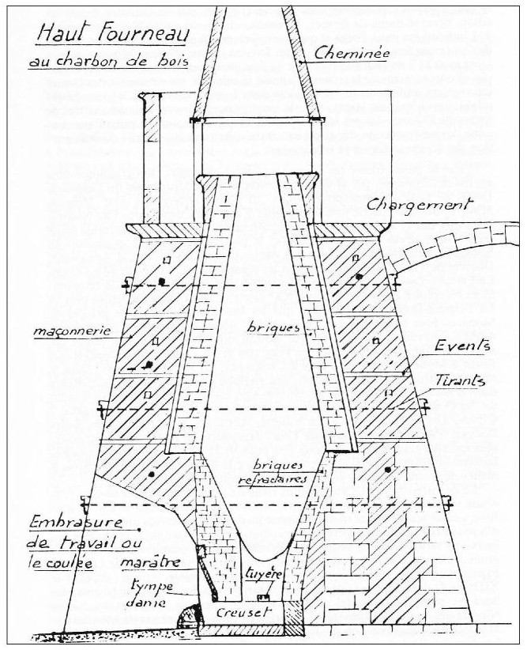

Pourquoi le halleureuses de kerminy.net ?
1* Cette page du net se propose d'être temporairement une newsletter des chantiers de la halle.
2* Figure des comptes-rendus, des billets, des résidus de recherches, des questionnements, et tout autres pensées des halleureuses notées...
3* Une extension visible et partagée des archives (txt, ytb, jpg, pdf, mp4...) rangée dans un tableau en bas
>>>>>

CHARTE DE LA HALLE <<<<<>>>>> AGENDA DE LA HALLE <<<<<
COMPTE-RENDU de la rencontre
 au moulin du tertre à Guer (56) Val d'Anast (35) - organisé par le collectif de la Bieffe (collectif issu du milieu squat parisien)
au moulin du tertre à Guer (56) Val d'Anast (35) - organisé par le collectif de la Bieffe (collectif issu du milieu squat parisien) Les bras de l'Aff ruissellent en cette zone et ses formes prennent (doué, bief, étang, ruisseaux, bouillon, berrouaille, marais, petites îles...). Le temps de la rencontre, un groupe répare l'écluse, pour que l'horizon de l'étang se stabilise. On se réunit en cercle aux alentours de ces flux, et en d'autres instants, l'assemblée prend place dans les combles du haut du moulin. La cuisine est collective, tout le monde s'affaire conjointement à ses tâches, il y a du flux, du passage, les repas sont végétariens, une grande tablée s'installe. Les discussions fusent.
Les bras de l'Aff ruissellent en cette zone et ses formes prennent (doué, bief, étang, ruisseaux, bouillon, berrouaille, marais, petites îles...). Le temps de la rencontre, un groupe répare l'écluse, pour que l'horizon de l'étang se stabilise. On se réunit en cercle aux alentours de ces flux, et en d'autres instants, l'assemblée prend place dans les combles du haut du moulin. La cuisine est collective, tout le monde s'affaire conjointement à ses tâches, il y a du flux, du passage, les repas sont végétariens, une grande tablée s'installe. Les discussions fusent.Contexte du week-end du 16-17 mai 2026 :
L'invitation porte sur un week-end de rencontres autogéré "pour parler de propriété collective et d'usage. On s'est rencontré autour de lieux collectifs en Bretagne (Keriskis et
 le moulin de la Bieffe) et on partage le fait d'avoir vécu en squat. On considère que ça donne un certain rapport à la justice, à la vie collective, à l'entraide... Notre but est de se rencontrer entre gens qui sont traversés par les mêmes questions, sur l'accès à la propriété, parler de nos projets et nos expériences. On a envie de s'entraider pour trouver des solutions pérennes pour défendre nos lieux, réfléchir aux outils qui existent et de se les approprier. Comment se défendre face au droit, comment on trouve des thunes, comment on peut se partager nos ressources et nos savoirs pour s'entraider à construire nos lieux (matériellement et humainement), en gros lutter contre la propriété privée.
On aimerait que ces week-ends puissent donner lieu à d'autres rencontres pour mettre en place concrètement ce qui sort de nos discussions. On veut pouvoir se situer en tant que collectifs et individuellement, que les questions de classe et de thunes soient centrales dans nos discussions. Qu'on puisse penser des formes de solidarité et de mutualisation dans nos lieux et entre lieux par rapport à la vie en collectif et ce que ça permet. Parce que la propriété est un outil de domination et que celleux qui le paye le plus cher sont les pauvres, les prols, les exilé·es, les personnes handies..."(message envoyé sur signal par E.)
le moulin de la Bieffe) et on partage le fait d'avoir vécu en squat. On considère que ça donne un certain rapport à la justice, à la vie collective, à l'entraide... Notre but est de se rencontrer entre gens qui sont traversés par les mêmes questions, sur l'accès à la propriété, parler de nos projets et nos expériences. On a envie de s'entraider pour trouver des solutions pérennes pour défendre nos lieux, réfléchir aux outils qui existent et de se les approprier. Comment se défendre face au droit, comment on trouve des thunes, comment on peut se partager nos ressources et nos savoirs pour s'entraider à construire nos lieux (matériellement et humainement), en gros lutter contre la propriété privée.
On aimerait que ces week-ends puissent donner lieu à d'autres rencontres pour mettre en place concrètement ce qui sort de nos discussions. On veut pouvoir se situer en tant que collectifs et individuellement, que les questions de classe et de thunes soient centrales dans nos discussions. Qu'on puisse penser des formes de solidarité et de mutualisation dans nos lieux et entre lieux par rapport à la vie en collectif et ce que ça permet. Parce que la propriété est un outil de domination et que celleux qui le paye le plus cher sont les pauvres, les prols, les exilé·es, les personnes handies..."(message envoyé sur signal par E.)Comment créer une

"plateforme" de transmission de savoirs partagés ? On a manifesté l'intérêt de forger un réseau sur ces questions là en Armorique. Avant de commencer les échanges, on s'est d'abord plier à l'outil du "thunomètre" pour évaluer la situation socio-économique des personnes présentes, afin d'en parler ensemble et de se positionner dans le groupe (notamment pour le prix libre). Cet outil évite les biais de classe et permet de créer un espace serein pour aborder les questions économiques et de classes.Collectifs présents pendant le week-end (je précise que se sont des notes, des descriptions plus détaillées et plus personnalisées viendront plus tard):
- Nord Vendée entre le (44) et le (85) se monte un collectif affinitaire de 6 à 7 personnes dans un corps de ferme, dont une personne vit à 100%.
- Collectif de Keriskis près de Gourain, au nord de Lorient (56), corps de ferme avec près de 1.5 ha de terrain, ce collectif se définit comme étant queer, et il passe actuellement en propriété collective avec l'aide du fond de dotation ANTIDOTE.
- Inzinzac-Lochrist (56) près de Lorient, Karil récupère cette maison avec 1ha, et désire la passer en propriété collective afin d'accueillir des personnes trans (via l'OST de Lorient), d'en faire un lieu pour les personnes racisés, et/ou pour accueillir des personnes sans papiers.
- Pays de Rennes (35), habitat pour 5 à 6 adultes, aide à l'enfance, le collectif se questionne sur la propriété privé et sa violence, qui est dans quelle position lorsque telle "crise" arrive ? Qui repart avec quoi s'il y a des malentendus ?
- Île de Nantes (44), suite à une assemblée du 10 septembre, un réseau local de solidarité s'est constitué pour se poser la question d'une collectivisation des lieux afin de s'autonomiser par rapport aux politiques de la ville de Nantes ?
- Moron, du côté de Paimpont (56), coopérative d'habitant·es.
- Tours (37), squat collectif dans une caserne qui accueille près de 80 personnes (sous-collectifs), iels tentent de trouver des solutions de relogement et de fabriquer une convention politique d'habitat collectif.
- Collectif de la Bieffe au moulin du tertre à Val d'Anast (35)
- membres du fond de dotation d'ANTIDOTE
- Les Roches Blanches (29) font partie des discussions mais n'étaient pas présent·es.
- Le Presbytère à Douarnenez (29) font partie des discussions mais n'étaient pas présent·es.
- Le Maquis (fédération de collectifs) font partie des discussions mais n'étaient pas présent·es
- DRECH à Lorient (56) font partie des discussions mais n'étaient pas présent·es.
- et d'autres à venir (le Bois Harel (35) ?...)
Lors de cette rencontre, il a été décidé d'aborder plusieurs points : la mutualisation, qu'est-ce qu'habiter collectivement ? ; le partages des savoirs juridiques ; forger un réseau chantier ; la solidarité ville et campagne ; quel statut juridique choisir en fonction du lieu ? ; Qui produit du travail, qui en bénéficie et qui s'enrichie avec ?
 LES OUTILS JURIDIQUES
LES OUTILS JURIDIQUESla SCI (association de particuliers, de propriétaires), pour en sortir ça peut être très cher, ça nécessite des juristes pour se détourner de la loi et pour en faire une propriété collective et d'usages. La société actuelle est une société qui a élevé la propriété comme quelque chose de sacré. "Avec son statut d'immeuble idéel, la conception juridique de la terre change : elle n'est plus cet élément vivant "du cosmos" qui exige, pour son usage, "la succession des générations et la solidarité de tous", une chose productive, la terre littéralement nourricière, mais une entité corsetée, immobilisée, neutralisée, condamnée à la passivité. Réduit une portion ou fraction de la surface ou croûte terrestre, le fonds de terre n'est plus qu'une chose étendue (res extensa) ou substance corporelle." [p.25 Sarah Vanuxem, Propriété de la terre]
En 2008, le gouvernement de Sarkozy (UMP) lance les fonds de dotation, qui sont des fonds prévues pour défiscaliser notamment des héritages, des transactions immobilières, mais des fédérations anarchistes ont hackées ce modèle. La définition est la suivante : "Le fonds de dotation est un organisme de mécénat destiné à collecter des dons pour aider un autre organisme à but non lucratif à réaliser une œuvre ou une mission d'intérêt général." Alors bien sûr pour quel intérêt général, celui notamment de la loi et de l'Etat, c'est pourquoi il y a là déjà des enjeux de qualifications de l'intérêt général. ANTIDOTE et CLIP sont deux fonds de dotation aux systèmes différents, le premier est brièvement une structure juridique qui devient dans la loi possédant du foncier, mais par une convention collective et des AG trimestrielles nécessaires à la pérennité de la structure, celle-ci bloque la vente du foncier et empêche donc par ce bidouaillage structurel la capitalisation et donc l'existence de la propriété privé pour ce foncier concerné. L'appartenance à ce fonds de dotation se constitue avec une association fédérale qui pilote, et une association de décisionnaires, celles-ci verse un léger loyer (obligatoire dans la loi) qui sert à la pérennité d'ANTIDOTE. Ce loyer peut servir aussi à juste payer la taxe immobilière, le service de transmission des déclarations d'urbanisme, et pour financer le réseau de solidarité d'ANTIDOTE et soutenir les luttes. La mission d'ANTIDOTE est de prévoir les merdes futures, de projeter l'outil juridique dans le futur, mais il faut préciser que ces fonds dépendent de l'existence de la loi sur la liberté d'association (éliminer cette loi c'est le début du fascisme).
Le deuxième fonds CLIP prévoit aussi l'impossibilité de vente, et se lie avec l'association des usagères du lieu, et pour la forme à une association de propriétaires (incarnée par deux membres) qui n'aura aucun pouvoir puisque CLIP s'opposera toujours à la vente du foncier. Ce fonds est plus simple à mettre en place puisque c'est un réseau de propriétaires, une forme de syndicat, alors qu'ANTIDOTE sont les propriétaires légalement des lieux, ça implique beaucoup plus de démarches juridiques, d'accompagnement, et de confiance (mais si celle-ci est garantie par des conventions et des assemblées).
(...) Il est important de préciser que des collectifs ont repris le format de CLIP en restant une SCI mais avec trois associations à l'intérieur avec des pouvoirs décisionnaires importants. Cependant je ne peux pas préciser plus, on a juste aborder son existence. Il reste que la SCI existe et donc la propriété privée, mais celle-ci n'a plus la même valeur juridique, elle dépend désormais des trois entités associatives. (...)
Le le fonds de dotation entretient tout de même cette coutume de rattacher des droits à des personnes morales, au détriment finalement de la chose-milieu concernée. On a affaire à "une personne morale de droit privé à but non lucratif ayant pour but de réaliser ou de contribuer à la réalisation d'une œuvre d'intérêt général." Il est l'objet d'une argumentation rationnelle de l'économie de droit, contributif d'une capitalisation des biens et droits de toute nature qui lui sont apportés à titre gratuit et irrévocable. Les revenus de sa capitalisation peuvent être utilisés pour la réalisation d'une mission d'intérêt général (fonds opérateur), et les redistribuer à une personne morale à but non lucratif afin de l'assister dans l'accomplissement de ses missions ou de ses œuvres d'intérêt général (fonds redistributeurs). Le fonds de dotation peut être également mixte, à savoir à la fois redistributeur et opérateur.
Ses ressources sont affectées irrévocablement pour soutenir une œuvre d'intérêt général. "Il diffère de l'association qui est la convention par laquelle deux ou plusieurs personnes privées ou publiques mettent en commun, d'une façon permanente, leurs connaissances ou leur activité dans un but autre que de partager des bénéfices. À l'instar de la fondation, le fonds de dotation peut recevoir, sans restriction, toute libéralité, contrairement à l'association, qui ne bénéficie de cette faculté que si elle est reconnue d'utilité publique ou si elle réponds aux exigences relative au contrat d'association. En revanche, contrairement aux associations et aux fondations, les fonds de dotation ne peuvent pas recevoir de fonds publics." Pour le cas de Kerminy, ça peut être un problème puisque des partenariats avec des institutions et des fonds publics se font. Par exemple, "le prêt gratuit d'équipement - meuble ou immeuble - par une personne publique s'apparente à un versement de fonds publics prohibé. Il convient donc de conclure une convention tarifée entre la personne publique et le fonds de dotation pour fixer les conditions tarifaires de l'utilisation de moyens publics par le fonds de dotation."
Société coopérative d'intérêt collectif (SCIC) :c'est une société commerciale coopérative de production de biens et de services. "Son sociétariat multiple, associe obligatoirement autour d'un projet des salariés de la coopérative, des bénéficiaires de son activité et d'autres parties prenantes pour produire des biens ou des services d'intérêt collectif qui présentent un caractère d'utilité sociale." Ce nouveau statut pour les entreprises relève de l'économie sociale (qu'est-ce que l'économie sociale ?).
Les sociétaires sont les détenteurs de capital d'une société coopérative, ils suivent le principe général de la coopération, c'est à dire que chacun dispose d'une voix à l'assemblée générale indépendamment du nombre de parts sociales détenu au capital. Ces sociétaires sont des salariés de la coopérative (ou des producteurs), des bénéficiaires de son activité (clients, usagers, fournisseurs...), et d'autres personnes physiques ou morales qui contribuent par tout autre moyen à l'activité de la coopérative (par exemple des collectivités publiques, des entreprises, des associations, des bénévoles, des financeurs...).
il y a aussi la Société coopérative et participative ou société coopérative de production (SCOP).
Il existe aussi des modèles (ceci est une amorce pour des recherches plus précises) où une association de propriétaires émet un loyer à des usagers des lieux, à la hauteur des APL, afin que ces dernières ne paient pas de loyer et que des revenus arrivent tout de même à l'association de propriétaires.
Contrat à prêt d'usage (commodat) - Le moulin du tertre est en voie d'être sous ce contrat avec l'association de propriétaires en attendant d'être en SCIC. Il s'agit d'un contrat par lequel une partie, le prêteur, remet une chose à une autre, l'emprunteur, afin que celle-ci puisse s'en servir gratuitement. En contrepartie, l'emprunteur s'engage à restituer la chose en bon état à l'issue de son utilisation (est-ce que ça peut faire l'objet d'une convention d'usages ? On peut établir plusieurs conditions sous ce contrat, par exemple celles du lieu, comme les forêts, les haies bocagères, les mares…). Ce contrat rappelle le bail emphytéotiques, il reste temporaire, mais aucune rémunération n'est versée par les usagers des lieux. Il est très facile de le mettre en place.
_______________________/\__________
Forme juridique actuelle de Kerminy : - SCI (Marina, Dom, JF, Marie Jo, Pic) - la famille Leroy
Associations usagères => (N) duo artistique de Dom et Marina + Malo fait l'intermédiaire pour le devenir associatif de la Halle de Kerminy
Cyclo Farm - Malo
OPEN - Mero, Eug, Malo, Simon
MODELE DE FINANCEMENT ET INSTALLATION D'ATELIERS (DRAC)
Atelier céramique bénéficie d'une subvention de la DRAC pour l'achat d'un four à céramique électrique en triphasé. La convention a été signée entre Malo (artiste) et la SCI. Ce modèle de création d'atelier pourra être initié par la suite via d'autres artistes ou autres…
Atelier céramique à bois (appentis) et atelier forge (appentis) pour le compte de la Halle. Des communs relatifs (à écrire avec les personnes les plus concernés càd Mérovée (le boisilleur) et Malo (le céramiste).).
Enjeu de formation et de transmission des savoirs, des outils, des ateliers, afin d'assurer la pérennité de ces communs. Des partenariats avec différentes écoles se dessinent de plus en plus (ENSA Nantes, Ecoles des Beaux Arts diverses, Arts Déco…) un modèle économique est envisageable sous la forme de prestations. - formats d'adhésions, de moniteurices, forfaitaires… Enjeu non lucratifs à définir ce pourquoi on perçoit des forfaits, des prestations, des loyers…
PROPOSITIONS d'ateliers :
- proposition d'un
 atelier photographique analogique, résilient et autonome quant à l'industrie des chimies photographiques. Plusieurs techniques sont envisageables : - des révélateurs (film et papier) à base de tanins (acide caféique), de vitamine C et de cristaux de soude. Les acides caféiques sont présents dans le café (révélateurs caffenol), le thé et le vin, mais également en grandes quantités dans d'autres plantes facilement cueillables ou cultivables : - pour les cueillettes (aneth, grande bordanne, absinthe, mélisse, chardons, laurier… - pour les cultures : sauge, sarriette, thym, romarin, fenouil, basilic, pomme de terre (épluchures), radis et radis noir (feuilles) (liste pas absolument exhaustive) - des fixateurs à base d'eau de mer, en récupérant par évaporation une pâte concentrée en sodium, diluable et réutilisable. - Anthotypes : tirages photographiques à base de jus de plantes, utilisant la combustion de la chlorophylle au soleil pour révéler les images.
atelier photographique analogique, résilient et autonome quant à l'industrie des chimies photographiques. Plusieurs techniques sont envisageables : - des révélateurs (film et papier) à base de tanins (acide caféique), de vitamine C et de cristaux de soude. Les acides caféiques sont présents dans le café (révélateurs caffenol), le thé et le vin, mais également en grandes quantités dans d'autres plantes facilement cueillables ou cultivables : - pour les cueillettes (aneth, grande bordanne, absinthe, mélisse, chardons, laurier… - pour les cultures : sauge, sarriette, thym, romarin, fenouil, basilic, pomme de terre (épluchures), radis et radis noir (feuilles) (liste pas absolument exhaustive) - des fixateurs à base d'eau de mer, en récupérant par évaporation une pâte concentrée en sodium, diluable et réutilisable. - Anthotypes : tirages photographiques à base de jus de plantes, utilisant la combustion de la chlorophylle au soleil pour révéler les images.
- proposition d'atelier textile : espace prévu au dessus de l'atelier dans les combles, accès par une échelle au niveau du pressoir. D'un point de vue de structure, il faudrait voir pour éventuellement renforcé le plancher de l'atelier pour soutenir le poids des différentes machines et outils. Deuxième point, finir l'isolation du toit (déjà vu en partie avec Marina pour utiliser ce qu'il y a sur place : laine de verre ou de bois). Dans la situation actuelle, Dom finit de débarrasser l'espace et voir les besoins structurels pour mettre en place l'atelier. Il y aura concrètement, l'intention de construire un métier à tisser (à reconfirmer auprès de Gustave) et le travail sera autour de la laine (recherche donc d'outils nécessaires comme des ravets, des cardes, des écharpilleuses à donner, à restaurer, à acheter ? Et à l'avenir production de lin à Kerminy.
-
proposition d'un
 atelier impression, typographie, et édition, afin de produire en partie de la documentation pour la Halle et les différentes associations présentes en les lieux. L'intérêt de ce premier atelier est de produire des brochures explicatives (sur les chantiers, la charte, les protocoles, l'outils d'archéologie de chantier…). Il pourrait lancer le projet d'éditer des annales propres au lieu et au territoire, une forme d'historiographie des Annales.
atelier impression, typographie, et édition, afin de produire en partie de la documentation pour la Halle et les différentes associations présentes en les lieux. L'intérêt de ce premier atelier est de produire des brochures explicatives (sur les chantiers, la charte, les protocoles, l'outils d'archéologie de chantier…). Il pourrait lancer le projet d'éditer des annales propres au lieu et au territoire, une forme d'historiographie des Annales.
-
proposition d'un
 "Hacklab", avec des ressources numériques pour faire du montage, de la constitution de wiki, de blogs, de logiciels propres au lieu, d'un serveur local, etc. L'atelier dans les combles va recevoir du triphasé et la fibre, il sera le lieu idéal pour l'implantation temporaire ou fixe de ce premier espace du net (sneakernet, intranet...).
"Hacklab", avec des ressources numériques pour faire du montage, de la constitution de wiki, de blogs, de logiciels propres au lieu, d'un serveur local, etc. L'atelier dans les combles va recevoir du triphasé et la fibre, il sera le lieu idéal pour l'implantation temporaire ou fixe de ce premier espace du net (sneakernet, intranet...).
-
proposition d'un
 atelier métallurgie, pour se lancer dans la réduction du minerais de fer et produire les loupes nécessaires à la forge. L'atelier peut se réaliser en extérieur sous un léger appentis pour protéger le bas-fourneau contenu en dessous. Nécessité de trouver sur le territoire des gisements de minerais pour commencer à expérimenter cette production. Cet atelier peut être temporaire puisque par définition les sites métallurgistes sont itinérants (quel place pour des savoirs itinérants tels que le charbonnage, la métallurgie, le pastoralisme,
atelier métallurgie, pour se lancer dans la réduction du minerais de fer et produire les loupes nécessaires à la forge. L'atelier peut se réaliser en extérieur sous un léger appentis pour protéger le bas-fourneau contenu en dessous. Nécessité de trouver sur le territoire des gisements de minerais pour commencer à expérimenter cette production. Cet atelier peut être temporaire puisque par définition les sites métallurgistes sont itinérants (quel place pour des savoirs itinérants tels que le charbonnage, la métallurgie, le pastoralisme,  colportage… ?)
colportage… ?)
- proposition de récupération d'un pressoir à cidre en bois à récupérer éventuellement, afin d'être autonome en terme de production de breuvage."Parfois ce travail (de pilerie) commence un peu plus tôt et en prélude à une veillée qui se terminera vers "méneu"... Dans un cas comme dans l'autre, il fallait atteindre d'abord le village voisin, presque toujours "à la traverse" ; non par les chemins boueux mais par les sentiers boueux, en sautant les talus, en traversant parfois des prairies. Voici le récit d'un parcours de veillée (toujours appelée "filerie" même si cette activité n'avait plus cours.) Nous sommes en décembre et durant l'occupation et les seules chaussures sont les sabots. Pas de bottes dans les commerces et de toutes manière, ce luxe ne convient pas aux paysans." (p.39, Annales du Méné, T.IX, sur l'eau)
- proposition d'

un atelier fonderie. - proposition d'un atelier métal (question des nuisances sonores abordées)
 d'autres propositions sont à rédiger…
d'autres propositions sont à rédiger…
CONSTITUTION D'UNE BIBLIOTHEQUE
Elaboration d'une bibliothèque de références accessible sur le lieu, afin de revenir sur les documents qui ont participés à l'élaboration et aux réflexions de la Halle et du lieu. (une première case "Halle" a été ajoutée dans la bibliothèque commune)
QUESTIONS ET DEFINITIONS D'ACCUEIL DES PERSONNES DE PASSAGE ET EN VOIE D'INTEGRATION DE LA HALLE
Il a été question lors de cette réunion d'établir éventuellement une jauge définie en fonction des limites physiques du lieu, mais celle-ci pose certaines problématiques quant à la légitimité de poser une telle jauge ? La proposition a été pour le moment de fixer le temps de l'installation du collectif de la Halle, un noyau de personnes régulièrement présent·es (soit une trentaine de personnes présentes sur la conversation WhatsApp). On s'assure la possibilité d'accueillir d'autres personnes en fonction des évènements chantiers prévus et de leurs particularités (nécessité d'avoir des personnes avec des compétences sur différents savoirs, en fonction de l'organisation établie, des couchages disponibles, bref plusieurs particularités entrent en jeu). À terme, il a été évoqué d'imaginer une forme de "gîte", d'espace pour les personnes passagères, itinérantes, en même temps que l'élaboration des espaces pour les personnes dites "permanentes". "Les voyageurs restent puis s'en vont. Ils dorment dans les lits qu'on leur offre, mais bien souvent, ils préfèrent le sol : ils se couchent par terre, enroulés dans les couvertures à côté du feu, heureux de la chaleur, réticent à l'idée de se trouver enfermés dans un lit." (Phoebe Hadjimarkos Clarke, Tabor, éd. Le Sabot, p.18, 2021) Au travers de ces moments de rencontres, de recrutements, de mise en réseau, se produit un maillage de solidarités communales. C'est sur le sol de ce territoire et le seuil des portes de Kerminy que va se tisser les relations particulières d'une quotidienneté paysanne et artisanale non figée, et en rapport à ce dehors qui le rend visite. Chacun·e de celleux-là pourrait être-dit poser ses conditions, mais la matérialisation est une véritable histoire, l'art de transformer les conditions en contraintes, c'est-à-dire de ne pas se soumettre aux rapports de force existants mais d'en rejouer, au moins partiellement les implication (I. Stengers, Cosmopolitiques, p.60, 1997). Comment ainsi matérialiser la transformation des conditions (telle que la jauge, les savoirs, l'appartenance d'outils par exemple) en contraintes (usages définis, communs pensés…) ? On assiste sans doute ici à la question du collectif-au-présent, de l'être-au-présent, une immédiateté qui se doit d'être sans cesse remise en question en fonctions des contraintes de l'évènement et du milieu présent.
Compte-rendu PQ du 23/05/2026 :
Pour les prochains chantiers, il semble important que les espaces de chantiers ne soient pas surchargés, et que des personnes présentes ne soient pas perdues - non pas que c'était le cas sur ce chantier, mais se sont des points de vigilances sur lesquels nous nous devons d'être attentif·ves. Il a été proposé de prévoir plus de temps de chantier à l'apprentissage du maintien des outils, du dessin, et de l'utilisation des outils de mesure comme les cordeaux (aiguiser les haches, faire les traits de coupe, manier les cordeaux, être à niveau...). Il faudrait instaurer de vrai temps de transmission sur ces points là, quitte à ce que ça prenne plus de temps que prévu, afin d'éviter d'être trop rapide, trop bourru sur les chantiers (la question des "coups de bourre"). Dans les formations de charpente au Japon, la première année est uniquement consacré au dessin et à l'aiguisage des outils, on ne touche pas à la charpente.
Ensuite, par rapport à l'agenda de prévu sur ce chantier, quel regard on porte sur les objectifs listés ? quelle flexibilité on suit (les points quotidiens ont été vécus comme des instants importants pour définir les objectifs de l'immédiat présent, et l'agenda est appréhendé comme étant un ordre d'idée de l'organisation du chantier vu au plus haut, afin d'avoir cette flexibilité. Peut-être être plus clair sur nos limites pour les prochaines fois.) - Il est donc à noter pour les prochaines fois de vrais instants de transmission unproductive.
Projection : doit-on adopter un rdv mensuel de la halle pour plus de régularité et plus de transmission, et diluer les temps chantiers, afin qu'une répartition des disponibilités des personnes soient plus grandes.
| Nom du fichier | Type | Poids | Auteurices | Date |
|---|---|---|---|---|
| Organisation du lore de Kerminihy | mp4 | 131 Mo | Sap/ens | 24/05/2026 |
| On remonte les murs de la Forge (Pt.1) | ytb | 0 Mo | Halle de Kerminy | 20/05/2026 |
** Suite à une volonté des hébergeureuses, les archives ci-dessous sont accessibles librement.
** Kerminy
** Kerminy